02 / Product Design / 2025.03
KEKE · IP Design
The official study companion of LKSY Cloud
Overview
Designed a mascot the brand could actually stand behind. A well-run IP gives a company a face people recognise and remember — and it travels further than any line of copy.
About Keke
Keke started as a small blue owl living on the roof of a library, moving between book pages and starlight. Then he went abroad to study. At first he was anxious too — the language, the coursework, the distance — until a group of patient supervisors helped him through it, one problem at a time. Somewhere in there he worked out that studying isn’t only about courage. It’s about having someone beside you who quietly says: you can do this. So he came back to the cloud as a cloud-side study companion, and now looks after students far from home. His catchphrase stuck: “Don’t worry. We’ll get through it together.”
My Role
Studying abroad today means juggling a language, a coursework load and a culture you’re still learning to read. LKSY Cloud is an online tutoring platform built for exactly that: a global faculty of supervisors, intelligent learning tools, personalised teaching models and a deep course catalogue — all pointed at giving students, here or about to leave, a faster and steadier way through it.
Screens
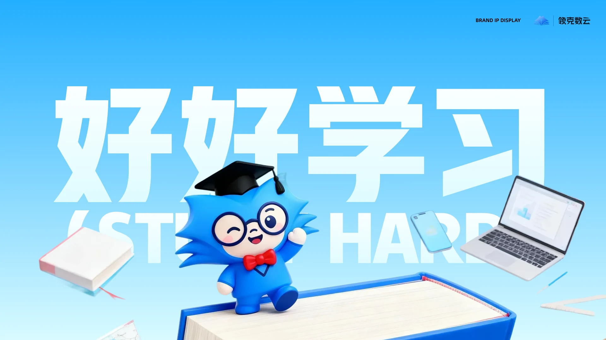
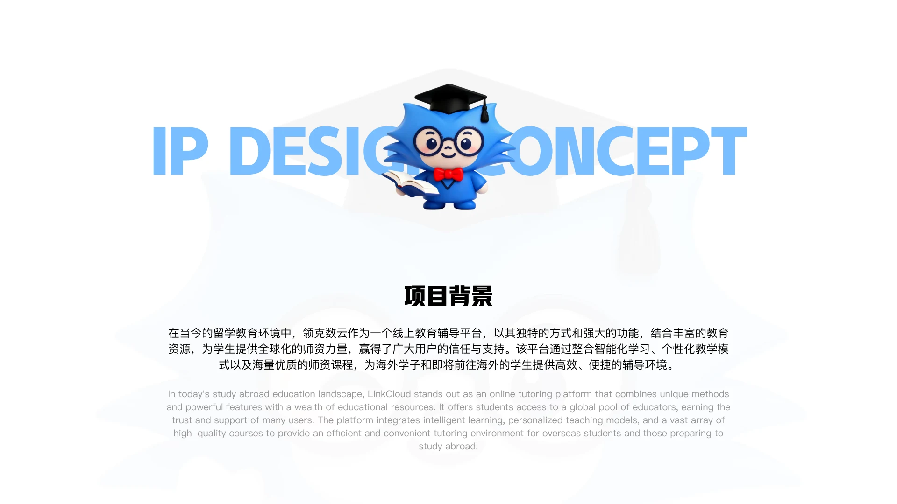
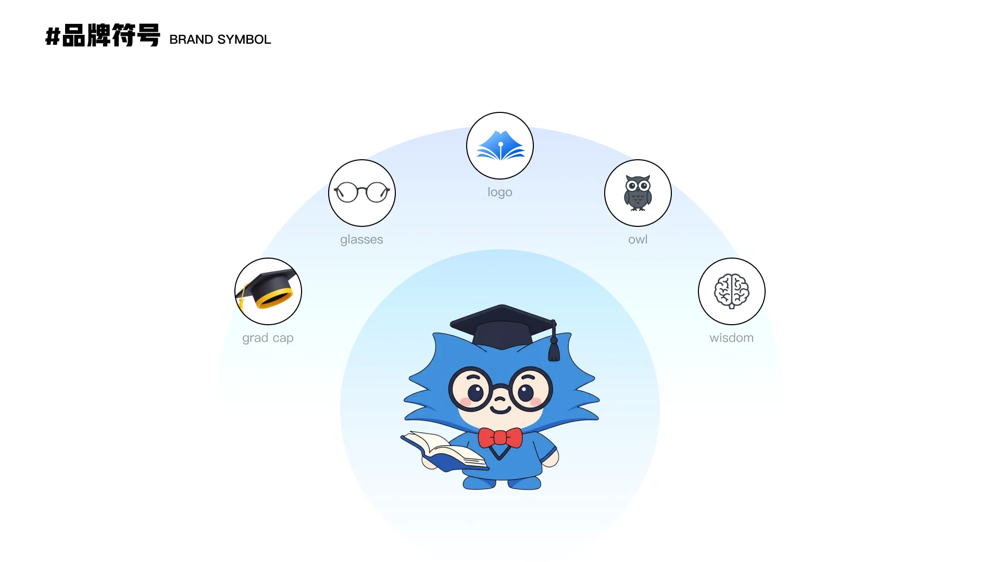
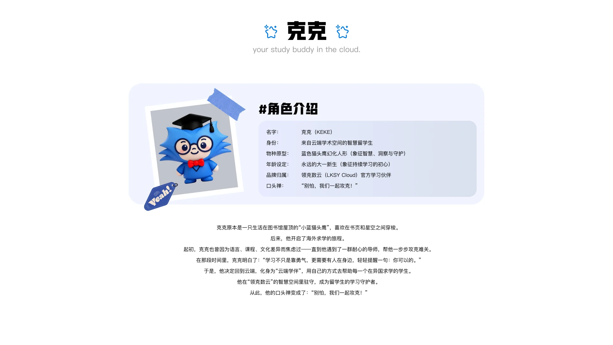
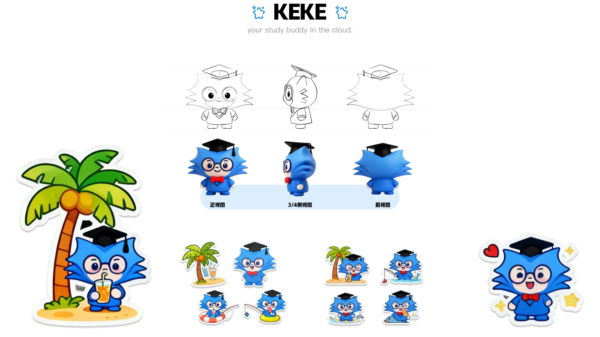
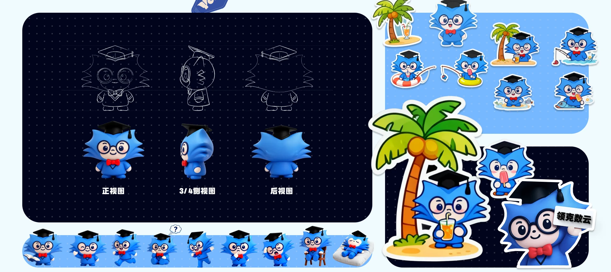
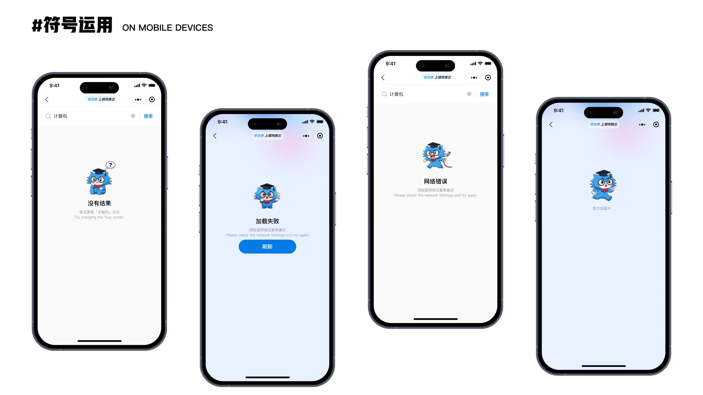
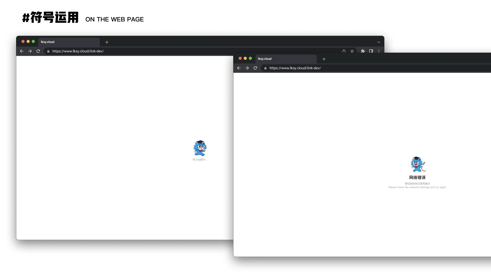
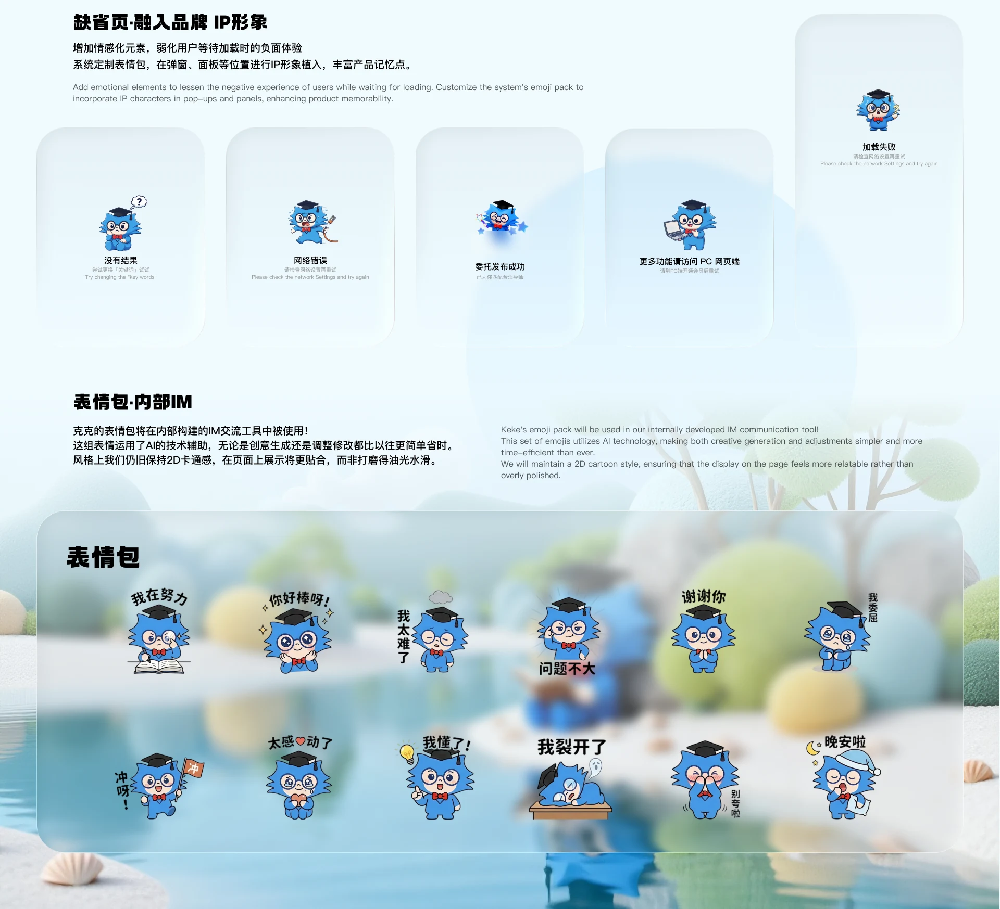
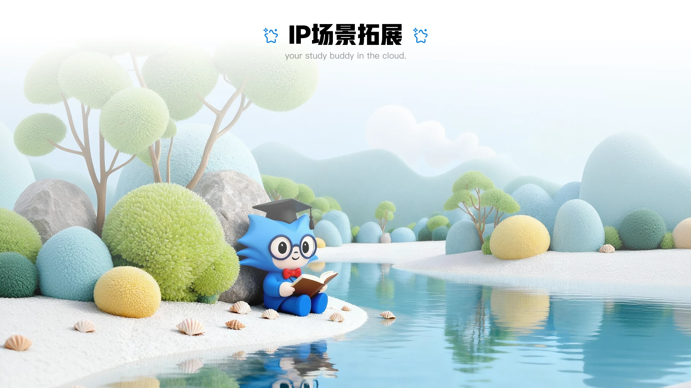
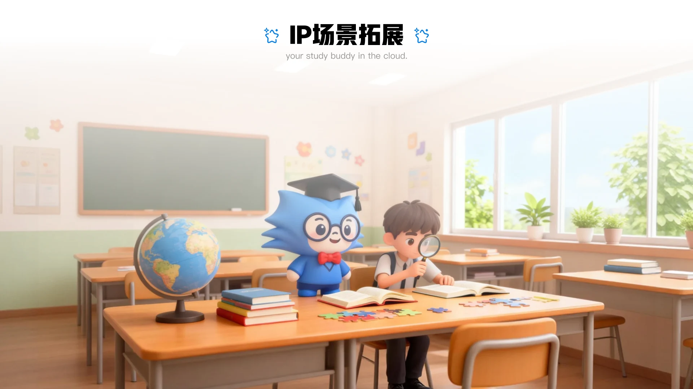
Other work
- LKSY · All Platforms2024 - 2026
- Changting Assistant App2020.01 - 2023.05
- XiaoWo Accessibility Call Assistant2020.01 - 2023.05
- Umeta 2.12023.07 - 2024.02
- Appleland Web2023.07 - 2024.02
- Modeller’s Circle2022.08 - 2023.01
- ZhiPing Smart Screen2021.07 - 2023.01
- Corporate Website Design2020 - 2023
Have something to build?
Available for remote UI/UX design outsourcing and freelance work: B2B dashboards, WeChat mini programs, mobile interfaces, accessibility design, prototypes and design specs.
Email 965333099@qq.com · WeChat and phone 18666099550